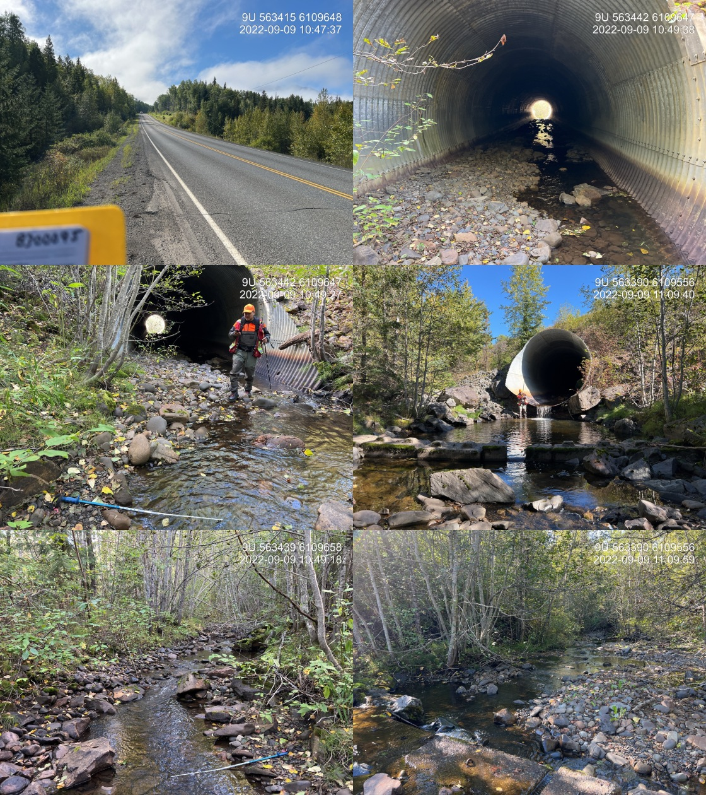

Tea Creek - 198220 - Appendix
Site Location
PSCIS crossing 198220 (MoTi chris_hwy_structure_road_id 4092) is located on Tea Creek, approximately 4.5km north of the village of Kitwanga, on Hwy 37 approximately 0.8km
upstream from the confluence with the Kitwanga River. PSCIS crossing 198200 on Moore Road (MoTi chris_culvert_id of 1528424) located approximately 200m upstream from the highway was also assessed and PSCIS crossing 198201 (MoTi chris_culvert_ids of 1528425 and 1528426) on Moore Road and a tributary to Tea Creek were also assessed. All crossings are the responsibility of the Ministry of Transportation and Infrastructure. Several other road stream crossings are modelled upstream however none are modelled as located on the mainstem of Tea Creek until approximately 4.5km upstream of Moore Road.
Background
At crossing 198220, Tea Creek is a fourth order stream with a watershed area upstream of the crossing of approximately 52.2km2. The elevation of the watershed ranges from a maximum of 1141m to 251m near the crossing (Table 5.20). Upstream of crossing 198220, have previously been recorded (MoE 2020b; Norris 2022). Steelhead use of the system upstream of the highway was confirmed by a local landowner who reported historic spawning in the tributary to Tea Creek that flows into the stream just below Moore Road and PSCIS crossing 198200.
fpr::fpr_table_wshd_sum(site_id = my_site) %>%
fpr::fpr_kable(caption_text = paste0('Summary of derived upstream watershed statistics for PSCIS crossing ', my_site, '.'),
footnote_text = 'Elev P60 = Elevation at which 60% of the watershed area is above',
scroll = F)| Site | Area Km | Elev Site | Elev Min | Elev Max | Elev Median | Elev P60 | Aspect |
|---|---|---|---|---|---|---|---|
| 198220 | 52.2 | 251 | 229 | 1141 | 587 | 568 | SSW |
| * Elev P60 = Elevation at which 60% of the watershed area is above |
In 1997, in partnership with Fisheries and Oceans Canada, the Ministry of Environment, Lands and Parks, Habitat Conservation Trust Fund, and non-governmental organizations (Gitanyow Fisheries Authorities and the Steelhead Society of BC), the Ministry of Transportation conducted fish passage remediation activities on Tea Creek at both Highway 37 as well as on Moore Road. At the highway, backwater weir structures, comprised of notched pre-cast concrete lock block designed to reduce the outlet drop were installed below crossing 198220. At the Moore Road crossing, previously perched culverts were replaced with a bottomless pipe arch (Sweeting, n.d.).
PSCIS stream crossing 198220 was ranked as a high priority for follow up by the Society for Ecosystem Restoration in Northern BC due to the large size of the stream, with many species confirmed upstream. A summary of habitat modelling outputs is presented in Table 5.21. A map of the watershed is provided in map attachment 103P.105.
| Habitat | Potential | Remediation Gain | Remediation Gain (%) |
|---|---|---|---|
| ST Network (km) | 100.1 | 16.4 | 16 |
| ST Lake Reservoir (ha) | 8.8 | 0.0 | 0 |
| ST Wetland (ha) | 40.8 | 1.4 | 3 |
| ST Slopeclass03 Waterbodies (km) | 4.9 | 0.0 | 0 |
| ST Slopeclass03 (km) | 19.4 | 2.5 | 13 |
| ST Slopeclass05 (km) | 50.3 | 5.9 | 12 |
| ST Slopeclass08 (km) | 20.7 | 6.4 | 31 |
| ST Spawning (km) | 1.8 | 1.5 | 83 |
| ST Rearing (km) | 19.4 | 11.4 | 59 |
| CH Spawning (km) | 1.8 | 1.5 | 83 |
| CH Rearing (km) | 10.9 | 7.2 | 66 |
| CO Spawning (km) | 14.6 | 7.2 | 49 |
| CO Rearing (km) | 17.5 | 7.2 | 41 |
| CO Rearing (ha) | 0.0 | 0.0 | – |
| SK Spawning (km) | 0.0 | 0.0 | – |
| SK Rearing (km) | 0.0 | 0.0 | – |
| SK Rearing (ha) | 0.0 | 0.0 | – |
| * Model data is preliminary and subject to adjustments. |
5.3 Climate Change Risk Assessment
Preliminary climate change risk assessment data is presented in Tables 5.22 - 5.23.
| Condition and Climate Risk | Rank | Priority | Rank |
|---|---|---|---|
| Erosion (scale 1 low - 5 high) | 3 | Traffic Volume 1 (low) 5 (medium) 10 (high) | 9 |
| Embankment fill issues 1 (low) 2 (medium) 3 (high) | 1 | Community Access - Scale - 1 (high - multiple road access) 5 (medium - some road access) 10 (low - one road access) | 1 |
| Blockage Issues 1 (0-30%) 2 (>30-75%) 3 (>75%) | 1 | Cost (scale: 1 high - 10 low) | 1 |
| Condition Rank = embankment + blockage + erosion | 5 | Constructibility (scale: 1 difficult -10 easy) | 2 |
| Likelihood Flood Event Affecting Culvert (scale 1 low - 5 high) | 1 | Environmental Impacts (scale: 1 high -10 low) | 2 |
| Consequence Flood Event Affecting Culvert (scale 1 low - 5 high) | 5 | Fish Bearing 10 (Yes) 0 (No) - see maps for fish points | 10 |
| Climate Change Flood Risk (likelihood x consequence) 1-6 (low) 6-12 (medium) 10-25 (high) | 5 | Priority Rank = traffic volume + community access + cost + constructability + fish bearing + environmental impacts | 25 |
| Vulnerability Rank = Condition Rank + Climate Rank | 10 | Overall Rank = Vulnerability Rank + Priority Rank | 35 |
| Category | Comments |
|---|---|
| Condition | Backwatering from previous remediation has failed. There is a big outlet drop. |
| Climate | Large system with a wide channel. Deep fill so failure would cause extensive damage to highwy and dump large quantities of sediments into Kitwanga River. |
| Priority | Structure is located on major highway with large amounts of fill. Replacement would be very expensive with large impact on traffic flow. |
Stream Characteristics at Crossing
At the time of the survey, PSCIS crossing 198220 was un-embedded, non-backwatered and ranked as a barrier to upstream fish passage according to the provincial protocol (MoE 2011b) (Table 5.24). There was low flow through the culvert at the time of survey. Water temperature was 11.6\(^\circ\)C, pH was 8.4 and conductivity was 291uS/cm.
PSCIS culvert 198200 culvert located on Moore Road approximately 220m upstream from the highway had a natural streambed and was ranked as passable to all species and life stages at the time of survey (Table 5.25). Although this crossing was incorrectly recorded as a closed bottom structure in 2022, the crossing was more likely an open bottomed pipe arch as noted in Sweeting (n.d.).
PSCIS crossing 198201 located on Moore Road approximately 350m east of crossing 198200 was assessed and ranked as passable at the time of survey (Table 5.26). There were two culverts side by side, with both embedded and non backwatered within a channel noted as 2.1m wide. Fish (up to 20cm in length) were observed within the culverts.
| Location and Stream Data |
|
Crossing Characteristics | – |
|---|---|---|---|
| Date | 2022-09-09 | Crossing Sub Type | Round Culvert |
| PSCIS ID | 198220 | Diameter (m) | 4.8 |
| External ID | – | Length (m) | 75 |
| Crew | AI | Embedded | No |
| UTM Zone | 9 | Depth Embedded (m) | – |
| Easting | 563431 | Resemble Channel | No |
| Northing | 6109637 | Backwatered | No |
| Stream | Tea Creek | Percent Backwatered | – |
| Road | Hwy 37 | Fill Depth (m) | 9.9 |
| Road Tenure | MoTi Highway | Outlet Drop (m) | 0.72 |
| Channel Width (m) | 5 | Outlet Pool Depth (m) | 0.75 |
| Stream Slope (%) | 2 | Inlet Drop | No |
| Beaver Activity | No | Slope (%) | 1.5 |
| Habitat Value | High | Valley Fill | Deep Fill |
| Final score | 34 | Barrier Result | Barrier |
| Fix type | Replace with New Open Bottom Structure | Fix Span / Diameter | 30.5 |
| Photos: From top left clockwise: Road/Site Card, Barrel, Outlet, Downstream, Upstream, Inlet. | |||
| Comments: Historic backwatering with 6 downstream lock block weirs. Skeena Fisheries Commission has assessed site in past. Very large system, pipe embedded until downstream 10m. Large outlet drop. Abundant algae. 10:46 |
fpr::fpr_table_cv_summary_memo(dat = pscis_phase1, site = my_site2, site_photo_id = my_site2, col_filter = my_crossing_reference)| Location and Stream Data |
|
Crossing Characteristics | – |
|---|---|---|---|
| Date | 2022-09-09 | Crossing Sub Type | Round Culvert |
| PSCIS ID | – | Diameter (m) | 2.8 |
| External ID | 8300012 | Length (m) | 10 |
| Crew | MW | Embedded | Yes |
| UTM Zone | 9 | Depth Embedded (m) | 0.22 |
| Easting | 563541.6 | Resemble Channel | Yes |
| Northing | 6109765 | Backwatered | No |
| Stream | Tributary to Kitwanga River | Percent Backwatered | – |
| Road | Moore Rd | Fill Depth (m) | 1 |
| Road Tenure | MoTi Local | Outlet Drop (m) | 0.1 |
| Channel Width (m) | 4.3 | Outlet Pool Depth (m) | 0.1 |
| Stream Slope (%) | 2 | Inlet Drop | No |
| Beaver Activity | No | Slope (%) | 0 |
| Habitat Value | High | Valley Fill | Deep Fill |
| Final score | 11 | Barrier Result | Passable |
| Fix type | – | Fix Span / Diameter | – |
Photos: From top left clockwise: Road/Site Card, Barrel, Outlet, Downstream, Upstream, Inlet.
|
|||
| Comments: Embedded with no outlet drop. Very wide channel with gravels and cobbles. 10:18 |
fpr::fpr_table_cv_summary_memo(dat = pscis_phase1, site = my_site3, site_photo_id = my_site3, col_filter = my_crossing_reference)| Location and Stream Data |
|
Crossing Characteristics | – |
|---|---|---|---|
| Date | 2022-09-09 | Crossing Sub Type | Round Culvert |
| PSCIS ID | – | Diameter (m) | 1.6 |
| External ID | 8300917 | Length (m) | 8 |
| Crew | MW | Embedded | Yes |
| UTM Zone | 9 | Depth Embedded (m) | 0.38 |
| Easting | 563869.2 | Resemble Channel | Yes |
| Northing | 6109781 | Backwatered | No |
| Stream | Tributary to Kitwanga River | Percent Backwatered | – |
| Road | Moore Rd | Fill Depth (m) | 0.7 |
| Road Tenure | MoTi Unclassified | Outlet Drop (m) | 0 |
| Channel Width (m) | 2.1 | Outlet Pool Depth (m) | 0.2 |
| Stream Slope (%) | 1 | Inlet Drop | No |
| Beaver Activity | No | Slope (%) | 1.5 |
| Habitat Value | High | Valley Fill | Deep Fill |
| Final score | 11 | Barrier Result | Passable |
| Fix type | – | Fix Span / Diameter | – |
Photos: From top left clockwise: Road/Site Card, Barrel, Outlet, Downstream, Upstream, Inlet.
|
|||
| Comments: Two culverts, both embedded with no drop. Fish spotted in culvert(up to 20 cm in length) and downstream. Erosion near culvert. 10:50 |
Stream Characteristics Downstream
The stream was surveyed downstream from crossing 198220 for 400m (Figures 5.26 - 5.27). The dominant substrate was gravels with cobbles sub-dominant.The average channel width was 5.4m, the average wetted width was 3.2m, and the average gradient was 3%.Total cover amount was rated as moderate with boulders dominant. Cover was also present as small woody debris, undercut banks, and overhanging vegetation. There was boulder cover and gravels throughout the survey but very few pools. The habitat was rated as high value for salmonid rearing and spawning.
Stream Characteristics Upstream
The stream was surveyed upstream from crossing 198220 for 600m (Figures 5.28 - 5.31). The dominant substrate was cobbles with gravels sub-dominant.Total cover amount was rated as moderate with small woody debris dominant. Cover was also present as large woody debris, boulders, undercut banks, and overhanging vegetation.The average channel width was 4.2m, the average wetted width was 2.8m, and the average gradient was 3.9%. Only a few areas contained gravels suitable for spawning. The channel was wide throughout with a lot of woody debris. There were large amounts of undercut banks that provided cover, but very few deep pools. Some steep eroding banks were seen in a few locations on the survey. Juvenile fish were spotted, in the culvert on Moore Road. Overall, the habitat was rated as medium value as an important migration corridor containing suitable spawning habitat and having moderate rearing potential.
Structure Remediation and Cost Estimate
Should restoration/maintenance activities proceed, replacement of PSCIS crossing 198220 with a bridge (30.5m span) is recommended. The cost of the work is estimated at $22,875,000 for a cost benefit of 849 linear m/$1000 and 2122.4 m2/$1000.
Conclusion
There was 19.4km of habitat modelled upstream of crossing 198220 with areas surveyed rated as medium value for salmonid rearing and spawning. 198220 was ranked as a high priority for proceeding to design for replacement. Electrofishing upstream and downstream of the culvert is recommended to provide insight into fish density and migration patterns.
tab_hab_summary %>%
filter(Site == my_site) %>%
# select(-Site) %>%
fpr::fpr_kable(caption_text = paste0('Summary of habitat details for PSCIS crossing ', my_site, '.'),
scroll = F) | Site | Location | Length Surveyed (m) | Channel Width (m) | Wetted Width (m) | Pool Depth (m) | Gradient (%) | Total Cover | Habitat Value |
|---|---|---|---|---|---|---|---|---|
| 198220 | Downstream | 400 | 5.4 | 3.2 | 0.3 | 3.0 | moderate | high |
| 198220 | Upstream | 600 | 4.2 | 2.8 | 0.4 | 3.9 | moderate | medium |
my_photo1 = fpr::fpr_photo_pull_by_str(str_to_pull = '_d1_')
my_caption1 = paste0('Typical habitat downstream of PSCIS crossing ', my_site, '.')Figure 5.26: Typical habitat downstream of PSCIS crossing 198220.
my_photo2 = fpr::fpr_photo_pull_by_str(str_to_pull = '_d2_')
my_caption2 = paste0('Typical habitat downstream of PSCIS crossing ', my_site, '.')Figure 5.27: Typical habitat downstream of PSCIS crossing 198220.
my_caption <- paste0('Left: ', my_caption1, ' Right: ', my_caption2)
knitr::include_graphics(my_photo1)
knitr::include_graphics("fig/pixel.png")
knitr::include_graphics(my_photo2)my_photo1 = fpr::fpr_photo_pull_by_str(str_to_pull = '_u1_')
my_caption1 = paste0('Typical habitat upstream of PSCIS crossing ', my_site, '.')Figure 5.28: Typical habitat upstream of PSCIS crossing 198220.
my_photo2 = fpr::fpr_photo_pull_by_str(str_to_pull = '_u2_')
my_caption2 = paste0('Typical habitat upstream of PSCIS crossing ', my_site, '.')Figure 5.29: Typical habitat upstream of PSCIS crossing 198220.
my_caption <- paste0('Left: ', my_caption1, ' Right: ', my_caption2)
knitr::include_graphics(my_photo1)
knitr::include_graphics("fig/pixel.png")
knitr::include_graphics(my_photo2)my_photo1 = fpr::fpr_photo_pull_by_str(str_to_pull = '_u3_')
my_caption1 = paste0('Typical habitat upstream of PSCIS crossing ', my_site, '.')Figure 5.30: Typical habitat upstream of PSCIS crossing 198220.
my_photo2 = fpr::fpr_photo_pull_by_str(str_to_pull = '_u4_')
my_caption2 = paste0('Typical habitat upstream of PSCIS crossing ', my_site, '.')Figure 5.31: Typical habitat upstream of PSCIS crossing 198220.
my_caption <- paste0('Left: ', my_caption1, ' Right: ', my_caption2)
knitr::include_graphics(my_photo1)
knitr::include_graphics("fig/pixel.png")
knitr::include_graphics(my_photo2)